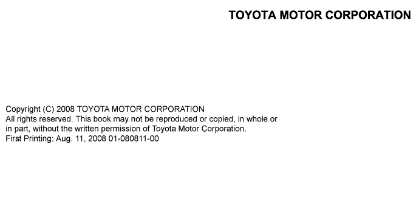

This is Volume 1 of the LAND CRUISER Station Wagon manual. There are seven volumes to this manual. The sections included in each volume are indicated by black type in the Section Index. Use the Section Index of each volume to find the volume with the section you need. This manual applies to the models listed below. It covers all information in the previously issued Pub. No. RM0810E, and includes all production changes effective August 2008 or later.
Applicable models
GRJ200 series
UZJ200 series
VDJ200 series
Please note that the publications below have also been prepared as relevant service manuals for the components and system in these vehicles.
Manual Name
Pub. No.
LAND CRUISER Station Wagon Electrical Wiring Diagram
EM0810E
All information in this manual is based on the latest product information at the time of publication. However, specifications and procedures are subject to change without notice.
If you find any failures in this manual, you are kindly requested to inform us by using the report form on the next page.

Repair Manual Quality Report Att.) Service Manager, Your Distributor